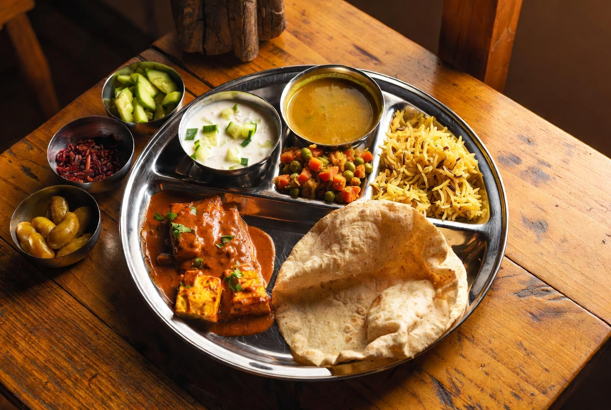
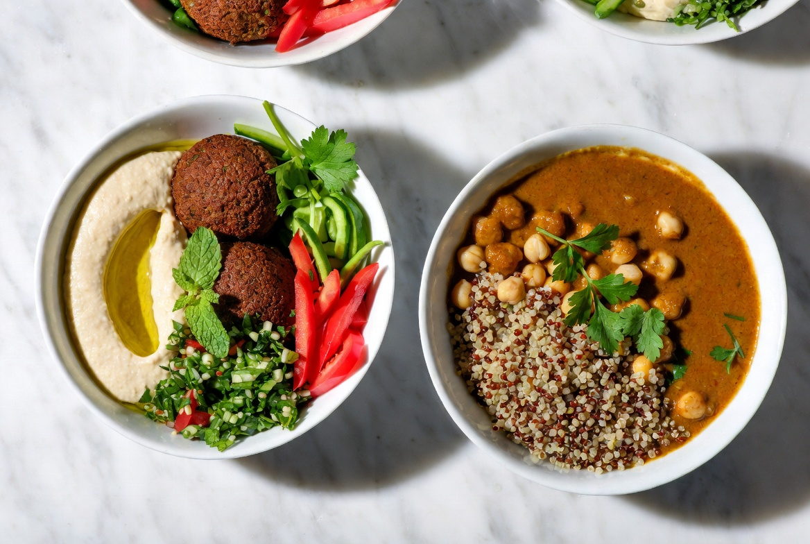
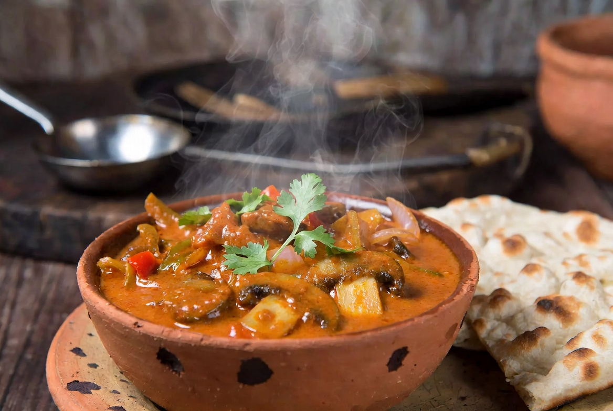

CURATED STORIES
VIEW ALL ARTICLES
Featured Articles

Heritage • Culture
12 min read
•
July 2026
The Enduring Legacy of Indian Vegetarianism
From ancient Vedic texts to modern thalis — how India became home to the world’s largest vegetarian population and why its traditions continue to shape global food conversations.
By Priya Sharma

History • Ingredients
15 min read
•
July 2026
From the Americas to the Indian Thali
How tomatoes, potatoes, chilies, and maize — brought from the New World — transformed Indian vegetarian cuisine forever. The fascinating story of culinary globalization.
By Dr. Anand Krishnan

Trends • Data
9 min read
•
July 2026
The Rise of Plant-Based Eating: Data from 2026
What the latest numbers reveal about vegetarian and vegan adoption worldwide, India’s unique position, market growth, and what it means for the future of food.
By Research Desk
Regional • India
11 min read
•
June 2026
Rajasthan’s Magnificent Vegetarian Cuisine
Despite its arid landscape, Rajasthan developed one of India’s most sophisticated and flavorful vegetarian traditions — from royal kitchens to village homes.
By Meera Rathore